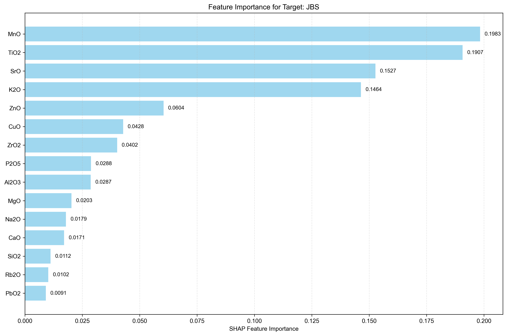
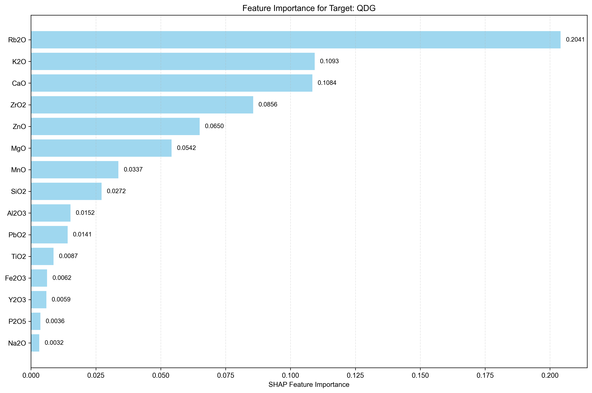
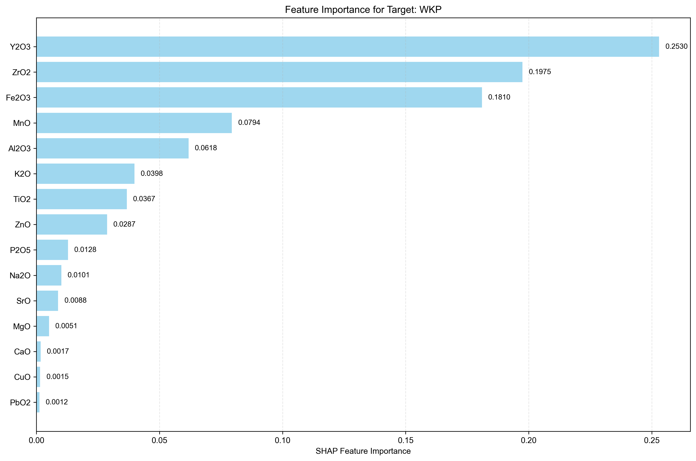
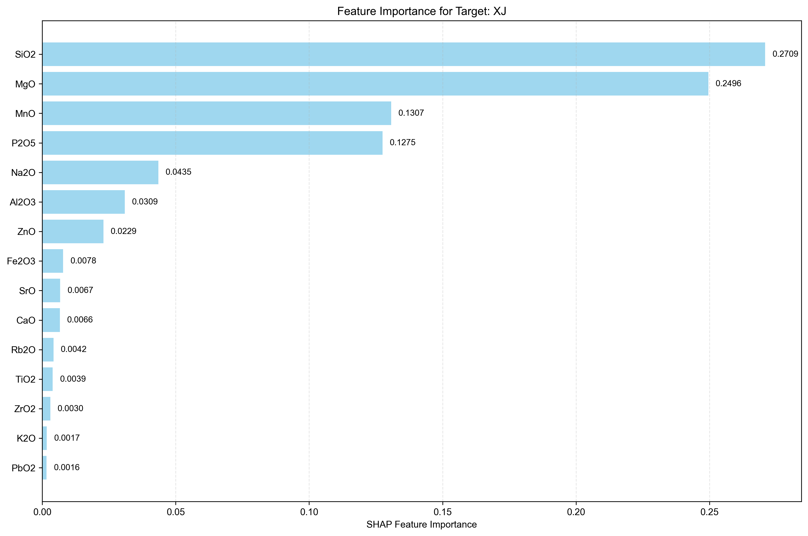
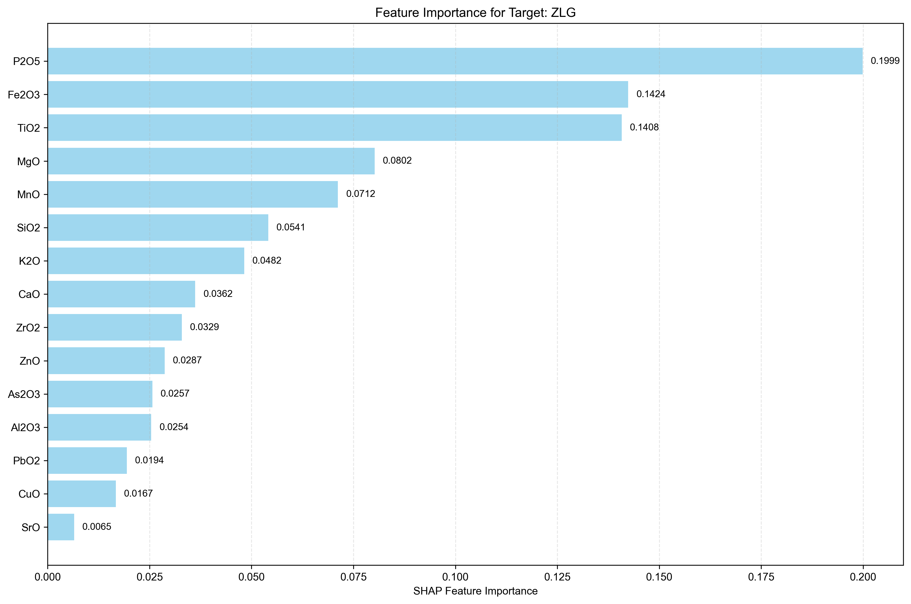

Analysis Method: SHAP
Number of Targets: 5
Generated on:
Targets Analyzed: JBS, QDG, WKP, XJ, ZLG
| Rank | Feature Name | SHAP Importance | Relative Importance (%) |
|---|---|---|---|
| 1 | MnO | 0.1983 | 20.16% |
| 2 | TiO2 | 0.1907 | 19.39% |
| 3 | SrO | 0.1527 | 15.53% |
| 4 | K2O | 0.1464 | 14.89% |
| 5 | ZnO | 0.0604 | 6.14% |
| 6 | CuO | 0.0428 | 4.35% |
| 7 | ZrO2 | 0.0402 | 4.09% |
| 8 | P2O5 | 0.0288 | 2.93% |
| 9 | Al2O3 | 0.0287 | 2.92% |
| 10 | MgO | 0.0203 | 2.06% |
| 11 | Na2O | 0.0179 | 1.82% |
| 12 | CaO | 0.0171 | 1.74% |
| 13 | SiO2 | 0.0112 | 1.14% |
| 14 | Rb2O | 0.0102 | 1.04% |
| 15 | PbO2 | 0.0091 | 0.93% |
| 16 | Fe2O3 | 0.0052 | 0.53% |
| 17 | Y2O3 | 0.0022 | 0.22% |
| 18 | As2O3 | 0.0013 | 0.13% |

| Rank | Feature Name | SHAP Importance | Relative Importance (%) |
|---|---|---|---|
| 1 | Rb2O | 0.2041 | 27.33% |
| 2 | K2O | 0.1093 | 14.64% |
| 3 | CaO | 0.1084 | 14.52% |
| 4 | ZrO2 | 0.0856 | 11.46% |
| 5 | ZnO | 0.0650 | 8.70% |
| 6 | MgO | 0.0542 | 7.26% |
| 7 | MnO | 0.0337 | 4.51% |
| 8 | SiO2 | 0.0272 | 3.64% |
| 9 | Al2O3 | 0.0152 | 2.04% |
| 10 | PbO2 | 0.0141 | 1.89% |
| 11 | TiO2 | 0.0087 | 1.16% |
| 12 | Fe2O3 | 0.0062 | 0.83% |
| 13 | Y2O3 | 0.0059 | 0.79% |
| 14 | P2O5 | 0.0036 | 0.48% |
| 15 | Na2O | 0.0032 | 0.43% |
| 16 | As2O3 | 0.0024 | 0.32% |
| 17 | CuO | 0.0000 | 0.00% |
| 18 | SrO | 0.0000 | 0.00% |

| Rank | Feature Name | SHAP Importance | Relative Importance (%) |
|---|---|---|---|
| 1 | Y2O3 | 0.2530 | 27.48% |
| 2 | ZrO2 | 0.1975 | 21.45% |
| 3 | Fe2O3 | 0.1810 | 19.66% |
| 4 | MnO | 0.0794 | 8.62% |
| 5 | Al2O3 | 0.0618 | 6.71% |
| 6 | K2O | 0.0398 | 4.32% |
| 7 | TiO2 | 0.0367 | 3.99% |
| 8 | ZnO | 0.0287 | 3.12% |
| 9 | P2O5 | 0.0128 | 1.39% |
| 10 | Na2O | 0.0101 | 1.10% |
| 11 | SrO | 0.0088 | 0.96% |
| 12 | MgO | 0.0051 | 0.55% |
| 13 | CaO | 0.0017 | 0.18% |
| 14 | CuO | 0.0015 | 0.16% |
| 15 | PbO2 | 0.0012 | 0.13% |
| 16 | SiO2 | 0.0009 | 0.10% |
| 17 | Rb2O | 0.0007 | 0.08% |
| 18 | As2O3 | 0.0000 | 0.00% |

| Rank | Feature Name | SHAP Importance | Relative Importance (%) |
|---|---|---|---|
| 1 | SiO2 | 0.2709 | 29.67% |
| 2 | MgO | 0.2496 | 27.34% |
| 3 | MnO | 0.1307 | 14.32% |
| 4 | P2O5 | 0.1275 | 13.97% |
| 5 | Na2O | 0.0435 | 4.77% |
| 6 | Al2O3 | 0.0309 | 3.38% |
| 7 | ZnO | 0.0229 | 2.51% |
| 8 | Fe2O3 | 0.0078 | 0.85% |
| 9 | SrO | 0.0067 | 0.73% |
| 10 | CaO | 0.0066 | 0.72% |
| 11 | Rb2O | 0.0042 | 0.46% |
| 12 | TiO2 | 0.0039 | 0.43% |
| 13 | ZrO2 | 0.0030 | 0.33% |
| 14 | K2O | 0.0017 | 0.19% |
| 15 | PbO2 | 0.0016 | 0.18% |
| 16 | CuO | 0.0008 | 0.09% |
| 17 | Y2O3 | 0.0006 | 0.07% |
| 18 | As2O3 | 0.0000 | 0.00% |

| Rank | Feature Name | SHAP Importance | Relative Importance (%) |
|---|---|---|---|
| 1 | P2O5 | 0.1999 | 21.20% |
| 2 | Fe2O3 | 0.1424 | 15.10% |
| 3 | TiO2 | 0.1408 | 14.93% |
| 4 | MgO | 0.0802 | 8.51% |
| 5 | MnO | 0.0712 | 7.55% |
| 6 | SiO2 | 0.0541 | 5.74% |
| 7 | K2O | 0.0482 | 5.11% |
| 8 | CaO | 0.0362 | 3.84% |
| 9 | ZrO2 | 0.0329 | 3.49% |
| 10 | ZnO | 0.0287 | 3.04% |
| 11 | As2O3 | 0.0257 | 2.73% |
| 12 | Al2O3 | 0.0254 | 2.69% |
| 13 | PbO2 | 0.0194 | 2.06% |
| 14 | CuO | 0.0167 | 1.77% |
| 15 | SrO | 0.0065 | 0.69% |
| 16 | Y2O3 | 0.0057 | 0.60% |
| 17 | Na2O | 0.0051 | 0.54% |
| 18 | Rb2O | 0.0038 | 0.40% |

• This report shows feature importance analysis for multi-target regression using SHAP method.
• Higher importance values indicate features that have more influence on the target prediction.
• Rankings are calculated independently for each target.
• Relative importance percentages show each feature's contribution relative to all features for that target.